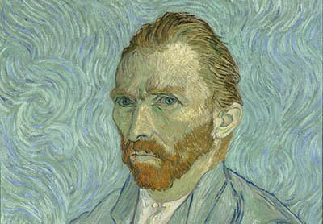
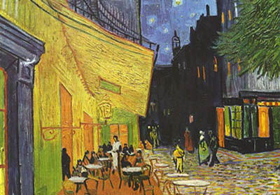
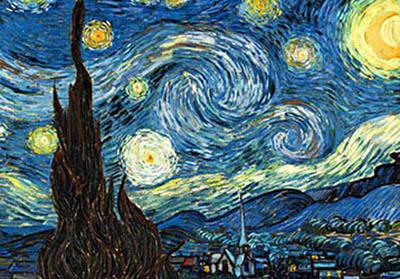

Las obras más relevantes de Vincent Van Gogh
La casa amarilla
1888
Trigal con cuervos
1890

Autorretrato
1889

Terraza de café por la noche
1888
Almendro en flor
1890

La noche estrellada
1889
Labrador en un campo
1889
Autorretrato con la oreja vendada
1889
El dormitorio en Arlés
1888


.jpg "Visualizar")